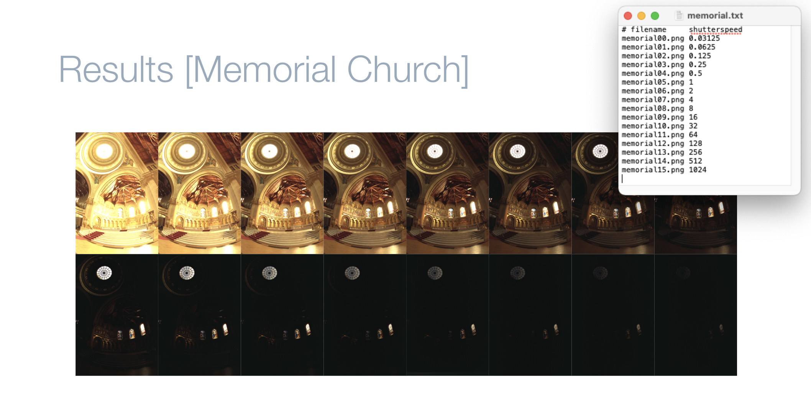
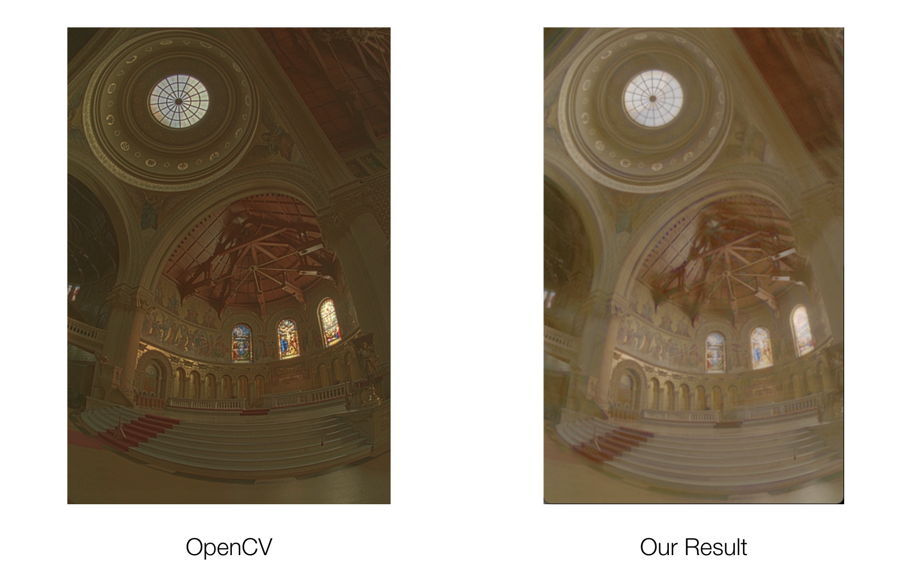
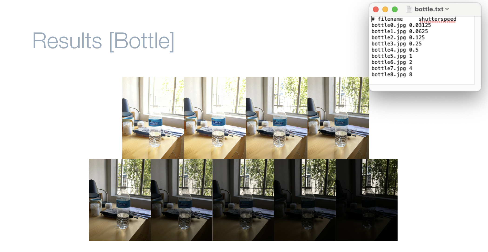
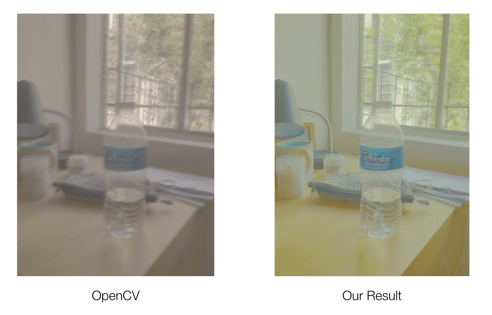

Whether due to small camera aperture (such as on mobile phones), uneven lighting (such as in extremely bright or dark settings), or other factors, we often end up taking pictures in less-than-ideal light conditions. If evaluated using a single shot, these factors lead to overexposure or underexposure, both of which lead to information loss, noise, and decreased picture quality. Taking good pictures under all lighting conditions has strong commercial and aesthetic motivations. Common solutions to compensate for poor lighting include adding gain and introducing longer exposure times; unfortunately, gain amplifies noise and longer exposure times can introduce blurring. Here we present another solution: high dynamic range (HDR) photography. We capture, align, and merge several frames, implementing work from Debevec [1] to construct a radiance map out of photographs at various exposures and implementing work from Levoy [2] to align images. Finally, we implement Durand’s 2002 [3] paper on tone mapping to convert the radiance map to a viewable image on screen.
Our overall algorithm is as follows:
First, we implemented the algorithms outlined in Debevec and Malik’s paper to fuse multiple photographs into a single, high dynamic range radiance map, whose pixel values are proportional to the radiance values in the scene. We broke this process down into the following functions:
construct_hdr_image is the highest level function that takes in a sequence of color images and their corresponding exposure times, and returns the final hdr image. It first separates the image data into each of the three color channels (B, G, and R). It then constructs the radiance map for each single-channel image sequence by calling construct_radiance_map. Lastly, it concatenates the 3 image radiance maps, which are 2D arrays, into one 3D array and returns it.
construct_radiance_map returns the radiance map for a sequence of images with a single color channel. It constructs a “weighting function” that peaks at the average pixel value, as well as a response function by calling response_function on the image and exposure input. It uses these two functions to calculate the log radiance value at each pixel in the image (Equation 6 in paper).
response_function and response_function_solver work together to return the response function of the given image sequence by calculating the response value at each pixel. More specifically, response_function, sets up the parameters needed for response_function_solver, where ln_t is the log shutter speed in Equation (2), l is the lambda constant to determine the smoothness, w is the weighting function to “emphasize the smoothness and fitting terms toward the middle of the curve”, and Z is a 2D array storing the pixel values of all images. We sample num_samples * num_samples pixels in each image and lastly call response_function_solver. This function follows the Matlab implementation in the paper to solve the linear system that minimizes the objective function O in Equation (3). Because it is quadratic in the Ei and g(z)’s, minimizing O is a linear least square problem which can be solved using singular value decomposition (SVD). The function returns the log exposure corresponding to pixel z in Equation (2).
Problems tackled and lessons learned:
Comprehending the algorithms outlined in the academic paper was quite difficult. It took several reads and additional googling to begin the implementation process. We also found and took inspiration from Brown University’s HDR project spec to help give us an idea of what functions to write. The spec also described some of the concepts in the paper more simply. Because this was the first thing my team implemented, we did not have an image processing pipeline built out yet, so we had to build that out first. After implementing radiance mapping, we were able to use the image sequence in the paper and compare our results directly to Debevec’s. For other image sequences (the water bottle one, taken by Harrison), we were able to verify our results by comparing our final images to those generated by opencv’s own hdr function.
We implemented local tone mapping to be able to show off our image cleanly. The idea behind the tone mapping is to take a radiance map and convert it to the limited dynamic range of the screen.
Following Durand’s 2002 paper, we implemented this mostly through a single function called local_tone_mapping. This function takes in a radiance map and a given dynamic range and returns the tone mapped image. Here are our basic steps:
Problems tackled and lessons learned:
We had a few problems that we had to work out when introducing tone mapping. The first was optimizing the result for our display. Oftentimes we could use simple concave functions like x/(x+1) or ln(x) to stretch the contrast in certain dark areas better, but oftentimes we had to try other choices or try combining with gamma compression using tuned values for the exponent in cases where the light was dominant (like the streetlight example). This helped us better differentiate the results for different values of dynamic range and gamma so that the tone mapping gave us better results.
We also had a recurring bug with the lightness of our pictures. After using tone mapping, our results on the memorial images were lacking in contrast, and even after looking at the S-curve and response curves we couldn’t find a satisfactory method to address this.
In this section, we implemented the auto alignment to align and crop a list of images before constructing the radiance map. The basic idea is to recursively blur and shrink the images into smaller size, then calculate the alignment score based on the sum of squared differences of light intensities of two images and find the offset that best align two images.
We implemented the algorithm inside the function multi_scale_align with two helper functions pyramid_find_offset and single_scale_align.
Here are the steps for multi_scale_align:
pyramid_find_offset to find the offset to shift for each image (except for the anchor image). np.roll to shift the image array in both x, y directions
Here are the steps for pyraid_find_offset:
single_scale_align to align each image based on the anchor image and keep track of the offsetsingle_scale_align
Here are the steps for scale_scale_align:
ndimage.sobel Problems tackled and lessons learned:
At first, our auto alignment does not give us a good result when we passed in a list of same images with different exposure times because it is hard to get the same range of color intensities in both bright and dark images. One problem we had in our implementation was that we used the brightest image as the anchor image so we compare the color intensities of all images with the brightest image. This results in bad alignment in the darker images. Instead, we chose the median image as our anchor image assuming the list of images is sorted based on light intensities. This gives a better alignment in general. Also, we took inspiration from Image Alignment project spec by Brown University to use edge detection so that instead of comparing the color intensities, we compare the change of light intensity which gives a much better results when the input has a higher range of intensity.
We first present our overall results on stock images. To the left, we show the exposure range (in the .txt file) and images that were combined into the results on the right. We
compare the result of our code with using OpenCV's built-in radiance map and tone mapping functions.
As mentioned, our implementation looks relatively bright.
|

|

|
Next, we present results from smartphone pictures we took of a bottle.
|

|

|
Phoebe:
Harrison:
Chris:
Tyler: